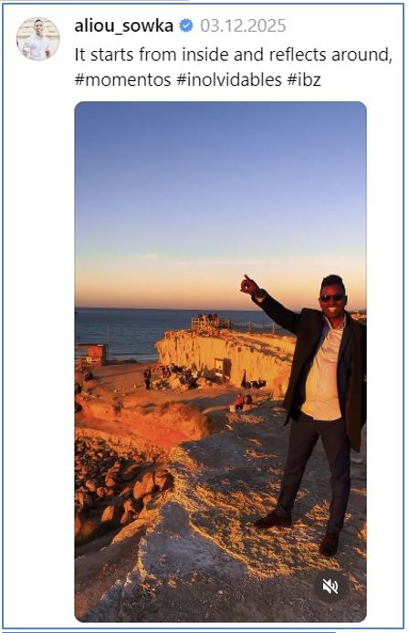
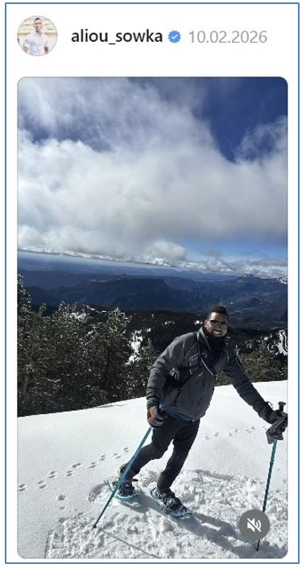
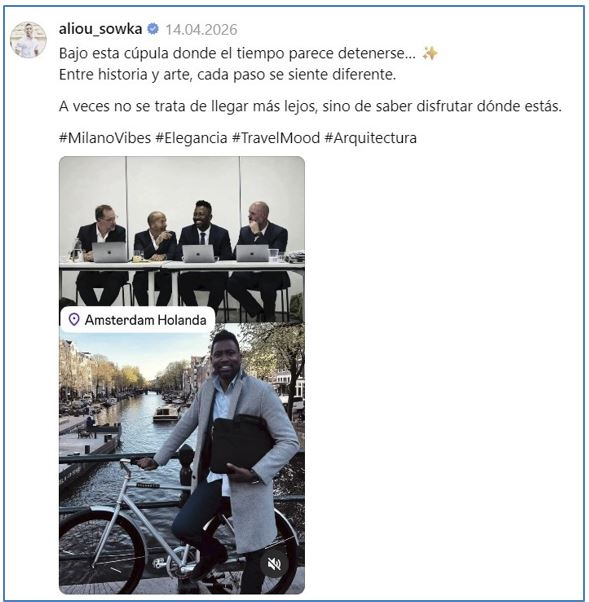
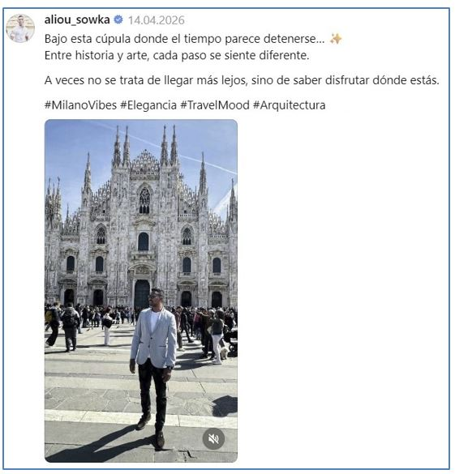
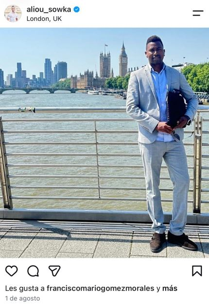
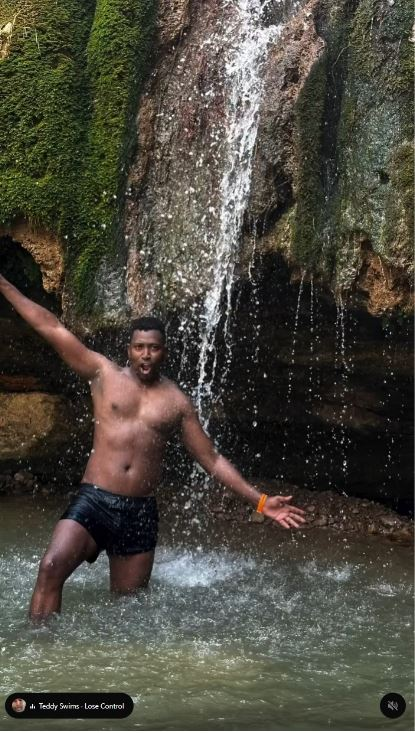
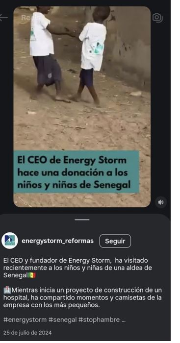
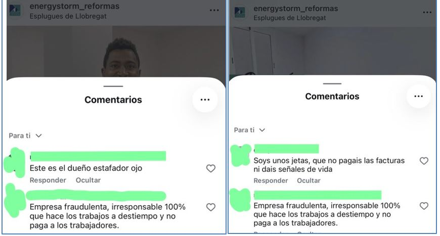

¿Ha tenido alguna experiencia con Aliou Sow Ka o con alguna de sus empresas?
Somos un grupo de personas que hemos sufrido perjuicios causados por Aliou Sow Ka (también conocido como Aliou Ka o Aliou Sowka), tanto en el ámbito privado como en el empresarial (empresas: Energy Storm, Makai Digital y Seylan Express).
Cualquier persona que ha sido engañada, estafada o manipulada suele pensar, al principio, que está sola. En este caso, eso no es cierto. El Sr. Sow Ka ha causado daños a muchas personas de forma deliberada, ya sean económicos, emocionales o incluso físicos. Su comportamiento persigue un único objetivo: obtener la mayor cantidad posible de dinero sin ofrecer nada a cambio.
Nuestro objetivo es reunir al mayor número posible de personas afectadas, recopilar pruebas del comportamiento perjudicial de Aliou Ka, demostrar la existencia de un patrón de conducta y de una actuación deliberada y, si procede, emprender acciones legales de forma conjunta.
Cuando una persona no está sola, puede contar con testigos que hayan sufrido perjuicios similares y dispone de pruebas (contratos, documentación laboral, conversaciones de WhatsApp, correos electrónicos, etc.), es posible actuar conjuntamente por diferentes vías legales.
Mientras muchas personas siguen esperando recuperar su dinero y, en algunos casos, han acabado atravesando graves dificultades económicas, Aliou Ka disfruta de viajes por toda Europa, vacaciones junto al mar, viajes de esquí y un elevado nivel de vida, tal y como muestran sus redes sociales.






Cuando se le exige la devolución del dinero, con frecuencia presenta contratos presuntamente millonarios que, según afirma, le generarán ingresos en muy poco tiempo. Hemos comprobado que, en numerosas ocasiones, se trata de supuestos contratos procedentes de Oriente Medio, de los que finalmente nunca resulta ningún negocio real. Una persona aislada puede volver a creer esas promesas. Sin embargo, cuando se dispone de más información y se conoce la experiencia de otras víctimas, resulta evidente que se trata de historias sin fundamento.

Aliou Ka también publica fotografías junto a personas supuestamente ricas o influyentes de distintos países africanos. Tras analizarlas mediante software especializado, algunas de esas imágenes presentan indicios de haber sido manipuladas o falsificadas. Además, utiliza fotografías de particulares tomadas sin su consentimiento o incluso de forma oculta, publicándolas posteriormente en sus redes sociales según su conveniencia, vulnerando así sus derechos de imagen.
Desde hace algún tiempo, Aliou Ka está eliminando publicaciones y contenidos que podrían servir como prueba de su comportamiento o modificando la configuración de privacidad de sus perfiles. No obstante, hemos documentado ese material antes de que desapareciera.

Aliou Ka tiene una gran capacidad para manipular a las personas. Incluso después de haber sufrido importantes pérdidas económicas, de esperar durante años la devolución de grandes cantidades de dinero o de haber sido víctimas de abuso emocional, muchas personas siguen sintiendo compasión por él cuando vuelve a presentarse como víctima.
Él no está en una situación que le pueda pasar a cualquiera. No es algo por lo que pase cualquier autónomo o empresario. No es una víctima. Es el responsable de sus actos.
Se trata de una persona que ha fracasado en distintos ámbitos de su vida, movida por una gran ambición económica y un estilo de vida costoso que pretende financiar con el dinero de otras personas. Poco le importa que sus víctimas también dispongan de pocos recursos o que sus actuaciones puedan llevarlas a graves dificultades económicas.
Cualquier información puede ser de gran ayuda, toda información es valiosa, por antigua que sea de hace un año, cinco, diez o incluso veinte años.
Si desea compartir su experiencia o recibir apoyo, puede ponerse en contacto con nosotros a través de la siguiente dirección de correo electrónico:
202412012@proton.me
Se trata de una dirección de correo segura. Su mensaje será tratado de forma estrictamente confidencial y no será utilizado para ningún otro fin.
Si en este momento no desea ponerse en contacto con nosotros o considera que no ha sufrido ningún perjuicio, le recomendamos actuar con prudencia tanto en el ámbito personal como en el profesional si entra en contacto con Aliou Ka o con cualquiera de sus empresas.
Las empresas mencionadas al inicio tienen su sede en Barcelona, aunque su actividad se extiende por toda España, incluidas las islas, así como por Andorra.
relacionados::
www.energystorm.es
www.instagram.com/aliou_sowka/
https://es.linkedin.com/in/aliou-sowka-4aa26412a
www.amazon.de/Conoci%C3%A9ndome-para-amar-autoestima-relaciones/dp/B0FJ7BQ2SQ
https://es.linkedin.com/in/aliou-sowka-4aa26412a
www.tiktok.com/@energystorm.es